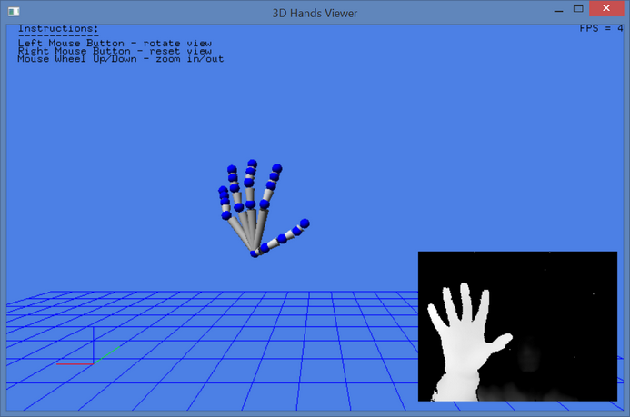

Sample: FF_Hands3DViewer |
Top Previous Next |
|
Introduction The FF_Hands3DViewer sample is an OpenGL* sample that visualizes hand tracking as an animated hand in the virtual world. As you move your hand and/or fingers, the virtual hand performs the same actions. Launch The samples can be launched directly from the bin folder of the SDK installation, or compiled and executed using Microsoft Visual Studio. The project and source files are located under the sample/FF_Hands3DViewer folder. Sample Options Present your hand in front of the camera. The virtual hand appears in the world view. You can move your hand and/or fingers. The virtual hand moves accordingly, as similar to Figure 132. You can use mouse wheels and buttons to rotate and zoom the virtual world.  Figure 132: 3D Hands Viewer
|